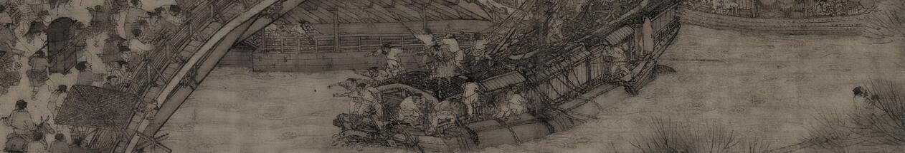

Updated on Sun, 19 Jul 2026 04:35:00 GMT, tagged with ‘review’—‘history’.
I finished Amitav Ghosh's astounding Ghost-Eye (2026) and, after rushing to read about the Sundarbans and Burmese Nat worship and India's many climate catastrophes, I was next compelled to read a bit on Jungian archetypes, irruptions, and synchronicities, because Ghosh made them so intriguingly juicy.
What follows is a book review of Ghost-Eye, but harkens back to questions I've had for more than a decade about history: how much is it "out there" versus in our heads, our hearts, and our stories about it? Here's a very minimal table of contents: Amitav Ghosh → Jung → I Ching → Nabonidus and the History of Iran podcast → Periclean Athens through history → historical reception.
§§ Amitav Ghosh is one of my favorite writers. In my book review of In an Antique Land (he wrote the book in 1993, I wrote the review in 2013), I confessed that it wasn't clear to me whether I enjoyed the book because of what it was, or because of who I was. It: a mix of 1980s Egyptian rural life, the 1100s' transoceanic trade between Yemen and the Malabar coast, and the Cairo Geniza. Me: a mess of South Asian roots strangling and in turn being strangled by Middle Eastern and American coastal traditions. It's like, dosa. You know the huge rice pancakes South Indian restaurants make, with the potato filling? I grew up eating those, and for ages I could not tell whether I liked them because they were objectively good, or just because they were my soul food. (Dosa isn't a perfect analogy because over the years I wound up dragging successive waves of friends and found family to Saravana Bhavan and Adyar Ananda Bhavan, in New York and New Jersey and California, and learned that, no, it seems dosa is objectively good?) But the book and its writer have I think left a huge mark on my way of thinking. I find myself reaching for these sentences so often that I must now wonder whether I seek out experiences likely to let me use them:
History is, notoriously, not about the past.
(from "The man behind the mosque", 2003), and
Reality often exceeds fiction in its improbability.
(from "Shared Sorrows: Indians and Armenians in the prison camps of Ras al-‘Ain, 1916–18", a 2012 essay and video, at 2:45).
§§There is much I should say about Ghosh and his first novel and his newest one (read either, or any of the links above) but to continue the story, I have to discuss Jungian synchronicities. In Ghost-Eye, the protagonist's aunt Shoma is a psychologist and a therapist, and she says,
"When events begin to intersect in strange ways, it’s often a sign of a deeper meaning… And the curious thing about synchronicities is that they tend to occur in clusters, which means that we need to be prepared for more."
I read that to Jung and collaborator Wolfgang Pauli and their successors read more into this than
§§ Eventually I was satisfied with tiptoe.gif around this bit of semi-Einstein-endorsed mysticism, but I did wind up reading the foreword that Jung contributed to the English translation of Richard Wilhelm's translation of the I Ching (Wilhelm's translation came out 1923, and Cary Baynes' translation, the one with Jung's foreword, came out in 1950). Many years ago, I took from Sinologist John Minford's lecture on the I Ching that, when you're stuck in a cycle of unproductive rumination on a problem, any source of fresh perspective is valuable. I remember an engineering professor explaining it like, "When you can't figure it out, pick a random word from the dictionary and think about your problem from that perspective." Very valid.
A quick computer sciency explanation of the I Ching's divination mechanism: there are 64 choices, made by 2-tuples of the same eight characters,
At first I thought the divination method would be simple, because, you just need six random bits right? (2^6 is 64.) But that is not acceptable. Yes, you start with six random bits (six fair coin flips). But each bit has a small chance of flipping:
If there are bit flips, you look up not just the symbol resulting from your first six bits (one of the 64 hexagrams) but also the hexagram that results from flipping bits. For both hexagrams the I Ching offers a perspective (an archetype if you will), as well as six mini-suggestions, corresponding to which of the six bits flipped.
We don't know exactly how the ancient Zhou people who first wrote the manual physically obtained these twelve bits, or what the probabilities of flips were, or which of the six mini-suggestions to consult (all of them, some subset of them). Those conventions were apparently committed to writing only millennia later (the coins method in the Tang era, the fifty yarrow sticks method in the Song; you do know your dynasties song right?).
Learning this, I felt the need to pay homage to this artifact, that still exerts such a pull on us that it makes our psychologists and physicists look for physical forces that imbue chance with meaning. I thought it wouldn't be inappropriate to hand-write this JavaScript function that uses the coin flip technique, randomized by the native JavaScript random function or by a user-provided fixed seed. I didn't use AI because I felt I'd feel a bit gauche (though I did consult Sonnet later to help figure out some details about modern JavaScript module support and incorporating a 32-bit integer hash function). It doesn't encode the text of the I Ching. After the code runs, you have to look up the hexagram or hexagram pair in the actual book.
Just as The Acolyte is the first Star Wars series created by a woman (and incredibly fantastic), Margaret J Pearson is apparently the first woman to give us an English translation (according to iching.wiki). Her The Original I Ching from 2011 is a tour de force for two reasons: first, she uses recently-excavated silk and bamboo editions of the work to clarify the hanzi, sometimes bringing their meaning into sudden focus (just as Shakespeare's rhymes and nursery rhymes suddenly make sense in Original Pronunciation). Second, she allows the gender-neutral language to stand on its own when it makes sense, given the numerous historical cases of women consulting the I Ching. I bought it on Apple Books.
In her introduction, Pearson notes that Wang Bi, who died circa 249 CE, wrote the oldest surviving commentary of the I Ching. But,
Wang Bi lived about a thousand years after the Changes [the I Ching] was created, in a world that was profoundly different. We now know much more about early China than he or Confucius did, thanks to the work of archaeologists and scholars, especially in the last few decades. Unlike them, we can read translations of Shang oracle bones instead of relying only on traditions and texts distorted by copying and recopying. And we know far more about early China.
This is important to Sinologists because though the I Ching is quite small textually (64 chapters multiplied by ~hundred characters), the various commentaries that accreted on top of it (the greatest attributed to Confucius) say a great deal about how the work was received through successive surges of Chinese society.
To me though what struck me was how casually Pearson made this forceful assertion: "a world that was profoundly different".
We too live in a world where some of our most sacred institutions can skew ancient. The Abrahamic, Vedic, and Buddhist traditions most numerically so sure, but I emphatically believe Ada Palmer when she says, "Then in the early seventeenth century, Francis Bacon invented progress" (2017 blog post you must read). The world of Francis Bacon, the world of the Royal Society's famous motto "nullius in verba", the world that birthed capitalism as an alternative, better way to organize society than kings and priests, feels as distant to me as perhaps Wang Bi's was to the founding Zhou dynasts that wrote the I Ching. Bacon's world without antibiotics to cure the sick, without the green revolution to feed the hungry, without gender and queer studies to nurture our best and save us from our worst, is only so tenuously related to ours that at times it befuddles me that our world came from that world.
§§ And Pearson's casual observation of Wang Bi's thousand+ year remove from his topic reminded me of Khodadad Rezakhani's 2013 podcast, the "History of Iran", where he cites two other memorable examples of people engaging with their deep past:
“One of these is a very interesting colophon. It's sort of a signature of a scribe copier of a text that you have when you copy text by hand from the time of Seleucus Nicator and Antiochus I, so sometimes around 270 BC maybe.
This is a priest scribe named Kidinanu of the city of Uruk in southern Mesopotamia, and he's going and looking at many tablets in the land of Elam, which are written several hundreds and even thousands of years earlier, and he has copied them for his own use. Now think of this. Everyone is familiar with this image of historians going to the archives and digging up old documents and taking notes and sometimes even copying what they need. And we associate this with modern historians' profession. But look, 2,300 years ago, someone was doing exactly this. He's going to an archive. He's looking at the documents of a culture that is 2,000 years old by the time he's looking at it.
This is quite old.
Now, there is another thing that this reminded me of. I think many have heard of Nabonidus, the last Chaldean king of Babylonia, who was removed from the throne actually by Cyrus. Nabonidus is a very peculiar person and sort of an unusual king. He's very famously interested in Babylonia's history and apparently ordered several digs, what we might call archaeological excavation, looking for antiquities in Babylonia. Of course, by the time that he is doing this, Babylonia is almost 2,000 years old or even more. That is the period that separates us from Julius Caesar or Jesus.
So, you know, an archaeologist 2,500 some odd years ago.”
(Episode 3, also on Apple Podcast which gives you a transcript, but you'll miss Khodadad's beautiful speaking voice.) This memorable lecture has bounced around like a neutrino in my brain for more than a decade. Nabonidus excavating Babylon feels very modern to us—I have family who have done archeological digs in the Middle East. Yet Nabonidus himself is deep history. And the sudden quadraticity of this ancientness gave me an idea on how to sound out my relationship with the past.
§§ What if we take some iconic moment in history, immortalized by a famous writer, and see how each successive generation reacted to it? Suppose we took Periclean Athens and the drama of the Peloponnesian War as immortalized by Thucydides and ask ourselves, through the successive centuries, how have Greek, Roman, and Byzantine, Ottoman, Italian, and Victorian folks conceptualized this event? I felt that, reading their contemporary thoughts about this singular event would give me a series of lenses to view this distant time, and the collection of those lenses would add up to more than the sum of their parts.
So I kicked off a little LLM-aided web research. For specific six time periods of four centuries each, I asked six instances of Haiku (Claude's cheapest, smallest clanker) to do literature reviews and to source diverse voices speaking about this time and place (Pericles' Athens—the city, the empire, the man, the war). I thought what I'd find was a discordant panoply of voices, arguing, exhorting, recounting, using and abusing the original story for their own purposes. What I found made me repeat the mantra I made from Amitav Ghosh: reality can exceed fiction in its improbability.
Here's a taste of its findings, juicy and embarrassing, what was there that I expected, what was there that I didn't expect, and what wasn't there that I didn't expect, with my comments interleaved.
So far so good. A riot of colors. And the tale is spreading. But then things got a bit weird.
So my preregistered hypothesis lies in tatters. The Byzantines had contact with India and China—hell, Roman monks had successfully stolen silkworms from China—but these people apparently weren't talking about this topic of Periclean Athens that to them is an ancient distant history. The Byzantines themselves seem to read Thucydides' account of the Peloponnesian War as a grammar and rhetoric textbook.
And I had to note here another anachronistic disorientation. Gregory of Tours. Bede. Chaucer. I.e., titans of the Western European Middle Ages. They do not engage with Thucydides because they do not have Thucydides. They are aware of the story—Bede had Orosius' Histories against the Pagans in his monastery, and likely knew of Justin's "Epitome of Pompeius Trogus' Philippic Histories", both of which recount the war (Orosius here is quite brief, Justin here and continuing for two more chapters). But there is scant mention of our topic in these writers' oeuvres. They didn't care.
So then as I read the work of synthesizing scholars, I felt very sheepish, because the Byzantines too it turns out didn't care:
With the exception of Theodoros Metochites’ essays [in the 14th century], Byzantine readers generally did not turn to Thucydides in order to learn about the history of the Greek city-states and their wars, which did not interest them much. Instead, Thucydides was a model of (difficult) Attic style and also served as a kind of prose-textbook for writing a particular kind of contemporary history, that is history in the classical style about wars and politics, with speeches and set pieces on sieges, plagues, and the like. … A number of Byzantine historians count as “imitators” of Thucydides in this sense, especially in the early period down to the seventh century … and then again in the late period after the mid fourteenth century. —Anthony Kaldellis, Byzantine Readings of Ancient Historians: Texts in Translation, with Introductions and Notes, 2015, Routledge
I'd also like to quote the entire opening paragraph of this paper:
To the modern classicist, it probably seems self-evident that Thucydides' Histories are, in his own words, κτῆμα ἐς αἰεί, a “possession for eternity” (1.22). Recent years have witnessed an explosion of books, edited volumes, and articles on his reception. Wiley-Blackwell has even published a Handbook to the Reception of Thucydides, which traces the influence of Thucydides from antiquity to the present day. This immense scholarly output affirms the enduring power of Thucydides to engage generation after generation of readers in the Western world. As for the Byzantine phase of this story, it is often assumed that his Histories were prized more or less continuously from late antiquity until they were rediscovered by Western intellectuals in the Renaissance. But the story of Thucydides during Byzantium is more nuanced. A seminal and popular text in the ancient world, Thucydides became an esoteric concern in Byzantium between the eighth and the thirteenth centuries. Moreover, classicizing histories modeled on Thucydides, such as Prokopios, stop in the Middle Byzantine period. —Scott Kennedy, "A Classic Dethroned: The Decline and Fall of Thucydides in Middle Byzantium", (vol. 58, no. 4, of Greek, Roman, and Byzantine Studies, 2018)
I can hear your howls of derision: it's painfully obvious in hindsight that I was silly to assume the engagement with this historical period would have been continuous. I now can imagine a giant spreadsheet: across all the columns of the first row you put people, indexed by time. Down all the rows of the first column, put events, also indexed by time. Half the spreadsheet is blank since a person at time T cannot say something about an event at time T-1. But the other half is also going to be quite patchy. Periclean Athens and the Peloponnesian War seems to be one that was heavily discussed for a few hundred years, then dormant for another few hundred years. And we know now that a big chunk of Anglophone undergrads read it, so what happened in the intervening 800 years? Let's march on with our bot-assisted literature review as we come to the birth of the modern age.
You've reached the end of my book review. Though I didn't discuss this in the bullets above, this exercise in idly peeling through history's strata has helped drive home the realization that we each of us take what we wish from the readings that we do. We might take much from a specific story, or we might overlook it—and our predecessors and successors will flip direction on that story.
§§ That brings me to the most interesting bit of one of the favorite books which I read (only partly) while writing it: Kaldellis opens Byzantine Readings of Ancient Historians: Texts in Translation, with Introductions and Notes with one of the most interesting explanations of reception I have read, and is my major takeaway: he notes how scholars studying a work are rarely interested in how intervening scholars have received that work, but suggests that this is extremely short-sighted, and the Byzantine inheritance of classical Greek works is a dazzling example of this:
What if the form, identity, or constitution of our artifact was not a settled matter at the point of reception but in fact took shape after it, through the very process of reception? A great deal of modern theory (often called postmodern) challenges the notion that things have fixed essences and finite moments of creation that encode specific original intentions. What if our artifact came into being gradually, through the accretion of layered meanings and the interventions of later “users”? We must remember that our vantage point is backward: what we see first, our first impressions of a cultural artifact, are precisely the later interventions. These often form our basic, “common sense” view of it, which we often mistake for a (putative) original. This is the predicament of reception.
The classical tradition as we know it, embodied in texts and monuments, does not consist of a series of self-explanatory artifacts, some of which survived and some of which were lost. Its configuration, contours, technologies of use, and more importantly its meanings and symbolic associations were not fixed for us at the (classical) moment of their creation but are also the product of a continuous process of subsequent selection, adaptation, recombination, reinterpretation, and of course political use. It is the post-classical that defines the classical, that brings it into being and gives it shape. … the selection of artifacts for survival (or loss); the form in which we receive them; and the values that we associate with them. All bear the imprint of millennia of reception … The process never begins or ends, for every point is a point of reception. The challenge for scholars is to examine how it gradually gave rise to what we know as the classical tradition, and how the ancient material was molded by the needs and values of self-consciously post-classical societies. Imagining possible alternatives is one way to escape the determinism and teleology urged upon us by the tradition that we face. The Athenocentrism of that tradition and its focus on the period of the democracy is one place to start: we are now beginning to understand that it was the product not only of Alexandrine literary tastes but also of Roman political interests in settling the conquered Greek territories. But we can imagine alternative Hellenisms that might have emerged under other circumstances, for example one centered on Lesbos, which produced the most writers and poets after Athens in the archaic and classical periods. What would a Hellenism focused on lyric rather than tragedy, on song rather than rhetoric, and on Hellanikos rather than Thucydides look like? And the Byzantines too played a part in exacerbating classical Athenocentrism. It is likely that, in terms of texts, potential alternatives survived until late antiquity, even if not valorized as much as their Athenian counterparts, only to disappear later, mostly through neglect. … why, out of the hundreds of texts that were written during antiquity in each field (e.g., philosophy, tragedy, rhetoric, and historiography), we have around 5 per cent or less. The factors behind this selection were late imperial Roman and Byzantine, with different ones operating in each field.
Here, I read Kaldellis as saying that the literal words we read from ancient Greece survived a very discerning and lossy transmission channel of imperial Roman tastes, goals, and interests, and other constellations of legacy are conceivable. He underscores this with an incredibly poignant observation: we lost much of the best because it was in Constantinople when it was sacked by the Fourth Crusade:
After the foundation of Constantinople, the emperors also sent out agents to search through the Greek cities and bring to the capital the best and most emblematic works, including the statues of Olympian Zeus, Lindian Athena, and works by many masters, presumably the authentic ones. But all of those were subsequently destroyed, except the Serpent Column from Delphi. Therefore, what we have of texts is by and large what the Byzantines chose to keep, but what we have of statues is what they chose to leave behind, a lot of it second-rate stuff and Roman copies. How different our notion of classical art would be if we had the Constantinopolitan collections instead
So we make choices every day on what from the past to valorize, and what to overlook. Those choices aren't right or wrong, but they have weight. I'd like to spend a few years reading and writing and talking about stories from the past that I think will be useful for our successors. This is, I think, a meaningful resolution to the Jungian question: are these historical assays, in their synchronicity, all in our minds and our emotions? Yes.
And I'm really done. A couple of final links I'd like to share. If you'd like to know about Periclean Athens and the Peloponnesian War, you could of course read the Landmark Thucydides, a doorstopper of a book full of maps and explanations of the original, or you could watch lectures 17–20 of Donald Kagan's Yale course on ancient Greece via this YouTube playlist.
I also would like to suggest John Minford's short and gentle introduction to Chinese culture via the I Ching, the Dao De Jing, Chinese poetry, and the Dream of the Red Chamber in this hour-long video and Apple Podcast (with transcript). A final bit of synchronicity: this famous novel, Dream of Red Chamber, was apparently condemned by Liang Qichao (the late Qing era thinker mentioned above) for inciting "robbery and lust".
If I shared a link above, it means I got and read the book or paper, at least partially. Items without links, I took from Wikipedia or Claude without verifying with serious research.
Finally. When I was about half-way through this essay, I was tempted to file it as unfinished, but thought to consult the I Ching (via my little JavaScript implementation of course). I rolled a 31, 沢山, a lake at the top of a mountain, with no flip bits (no lines). This is of course 咸, which Pearson's Original I Ching renders as "Reciprocity, Respect" with the text: "Persistence is effective." I have therefore, persisted till the end. And I thank you for persisting as well.
Banner credit: Crop from "Along the River During the Qingming Festival", showing a boat about to crash.
AI disclosure. Other than the Periclean Athens literature searches mentioned above (whose results and full transcripts are here), this post is 100% organic and artisanal and hand-written. Before publishing, I asked Opus for feedback on flow (transcript), which resulted in about 3 sentences being added.
Previous: Recentered storytelling: a review of Motherland: Fort Salem